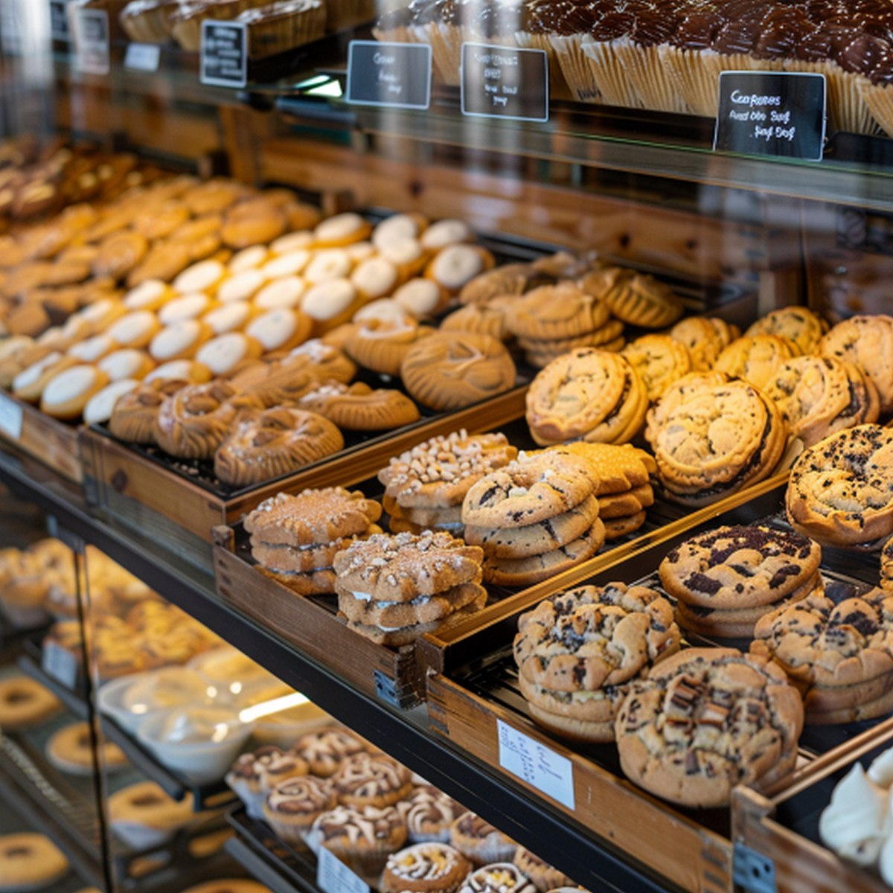

Welcome to North Star Bakery
There is something special about walking into a bakery and smelling fresh bread. At North Star Bakery, we hope to make that small moment part of your day.
srcset="media/bakery-feature-small.jpg" alt="Neighborhood bakery storefront with breads and pastries displayed in the window" >What We're Known For
We make crusty breads, flaky pastries, and cakes for everyday celebrations. We focus on small batches and friendly service.
Featured Item of the Week
Our signature rustic loaf has a golden crust and a soft center. Enjoy it with breakfast, soup, or a family dinner.

Stop By
We are a neighborhood bakery serving local families, commuters, and anyone looking for a fresh treat.
Sample hours: Monday–Saturday, 7:00 a.m.–5:00 p.m.; Sunday, 8:00 a.m.–2:00 p.m.
Location: Visit our neighborhood storefront. Please contact us for the current address.